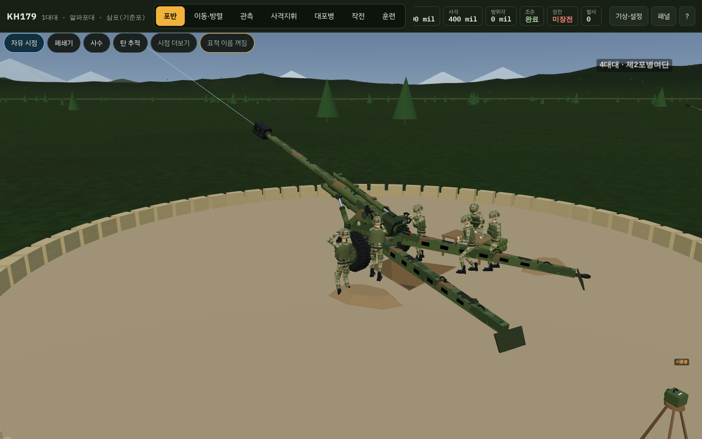
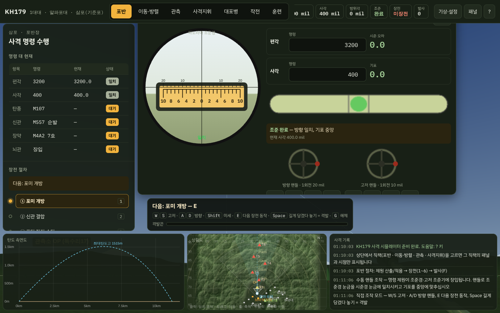
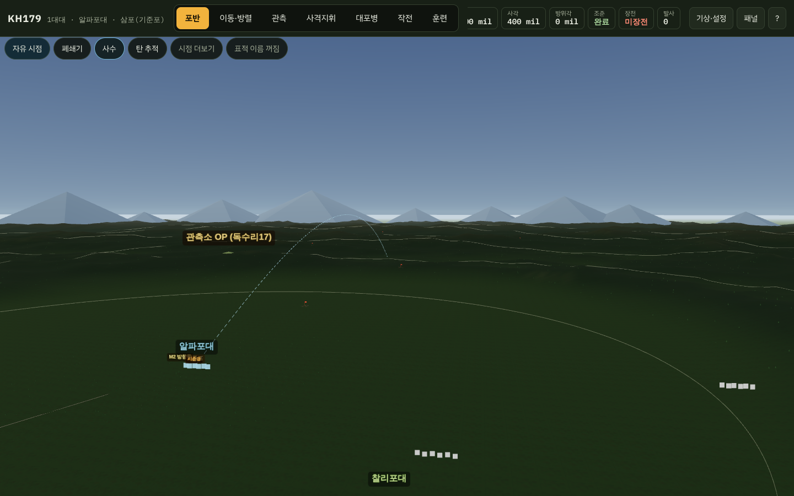
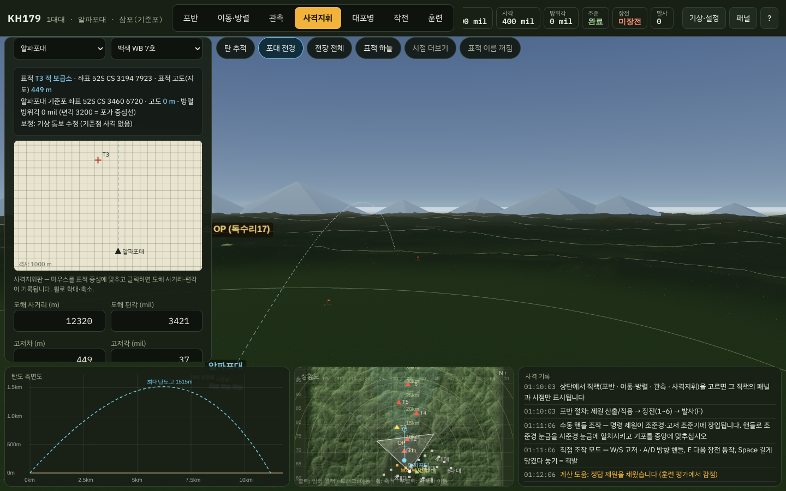
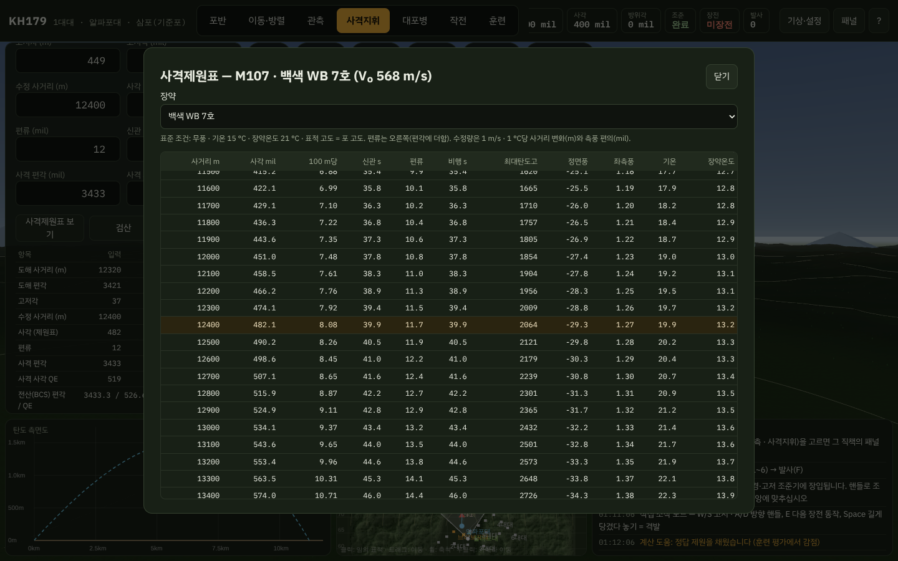
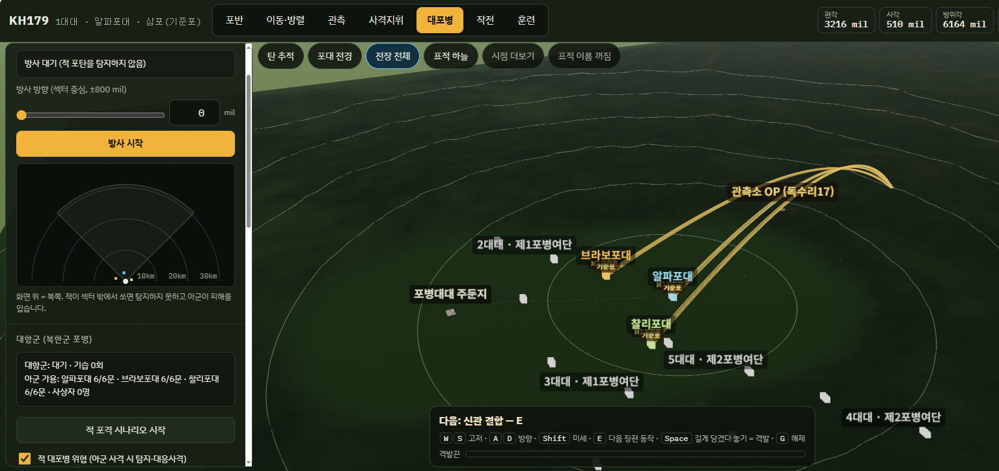
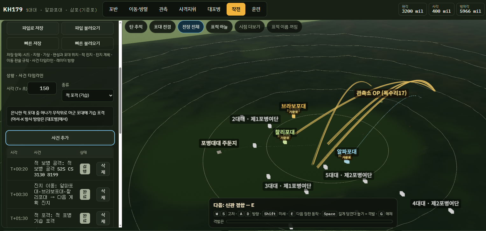
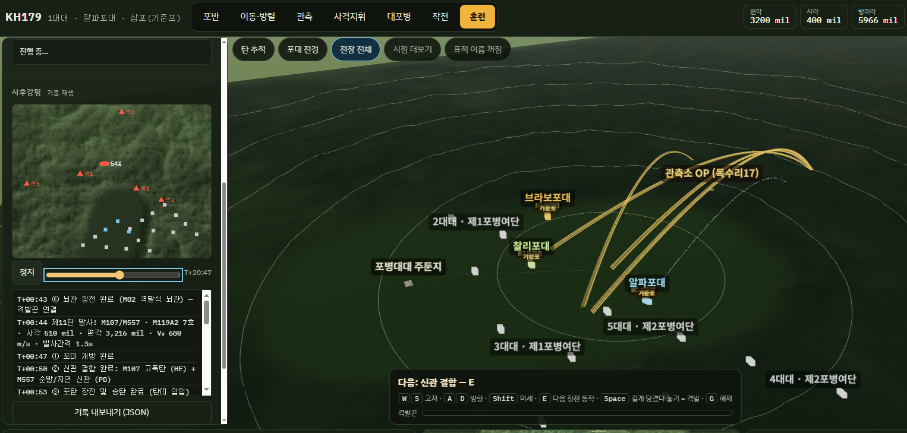
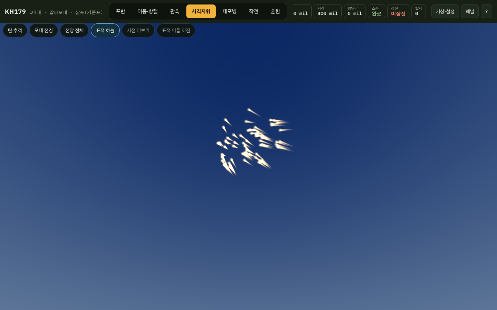
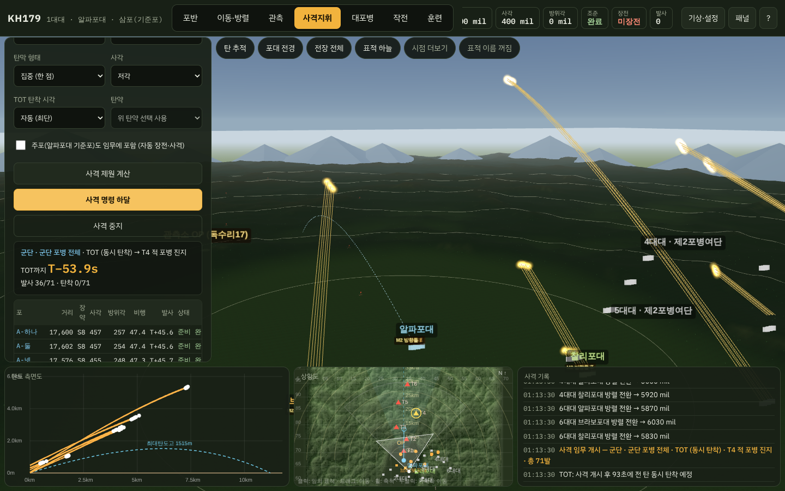

포 한 문 장전하고 쏘는 3D 장난감으로 시작했는데, 하나씩 붙이다 보니 일이 좀 커졌습니다. 지금은 군단 포병 108문, 산악 지형, 사격지휘, 대포병, 훈련 평가까지 들어간 브라우저 시뮬레이터입니다.
바로 해보기: https://kh179.pages.dev (설치·로그인 없음, PC 권장)
| 둘러볼 것 | 무엇을 해볼 수 있나 |
|---|---|
| 포반 | 핸들 돌려 조준하고, 장전 6단계를 거쳐 격발끈 당기기 |
| 지형·관측 | 산 너머 표적을 고저각·차폐 계산해서 맞히기 |
| 사격지휘 | 사격지휘판과 제원표로 직접 계산해서 쏘기, 대대·여단·군단 TOT |
| 대포병 | 아서-K 방사 방향을 짚어 적 포병을 잡고 응징하기 |
| 작전 | 진지·사격·상황을 계획해 두고 재생하기, 쏘고 빠지기 |
| 훈련 | 과제 5가지를 풀고 점수와 사후강평 받기 |
화면 맨 위의 직책 버튼(포반 · 이동·방렬 · 관측 · 사격지휘 · 대포병 · 작전 · 훈련)을 고르면 그 직책의 패널과 시점만 나옵니다. 포반은 실시간으로 직접 조작하고, 대대급 이상은 상황을 부여하고 재생하는 방식입니다.
1. 포반 — 핸들 돌리고, 장전하고, 격발끈 당기기
KH179 155mm 견인포 한 문과 포반원 6명이 있습니다. 포반장이 받은 사격 명령과 포의 현재 상태를 한 표에서 비교하면서 무엇이 남았는지 바로 보입니다.

직접 조작 모드 (G 키)가 손맛입니다.
- W/S · A/D: 고저 핸들과 방향 핸들. 누르고 있으면 점점 빨라지고, 놓으면 관성으로 조금 더 돈 뒤 멈춥니다. 1 mil마다 핸들이 딸깍 걸립니다.
- 파노라마 조준경: 시준경 눈금을 조준선에 맞추고 기포를 가운데로 보냅니다.
- E: 포미 개방 → 신관 결합 → 송탄 → 장약 → 포미 폐쇄 → 뇌관. 포반원들이 실제로 움직입니다.
- Space 길게: 격발끈을 끝까지 당긴 뒤 놓아야 발사됩니다. 짧게 당기면 안 나갑니다.

한 발마다 사각이나 편각을 옮겨 가며 쏘는 이동사격(종심·좌우·대각)도 됩니다. 포 번호는 포병 숫자로 부릅니다(하나포·둘포·삼포…). 주간 기준포는 삼포, 야간은 넷포입니다.
2. 지형과 관측 — 산이 있으면 계산이 달라집니다
아군 진지는 계곡 평지에, 북쪽 적 지역은 능선이 겹겹이 있는 산악 지형입니다.

- 고저각: 표적이 포보다 높으면 그만큼 사각을 더 올려야 합니다. 표적 정보에 고도·고저차·고저각이 나옵니다.
- 차폐(최소 사각): 앞에 능선이 있으면 낮게 쏜 포탄은 능선에 박힙니다. 사격지휘가 자동으로 고각으로 바꾸거나 "차폐로 사격 불가"를 냅니다.
- 관측 가시선: 관측소에서 표적이 안 보이면 사격요청 자체가 막힙니다. "4.3 km 지점 능선에 가림 — 관측소 이동 필요" 같은 무전이 옵니다.
- 상황도: 음영 기복도와 100 m 등고선 위에 부대와 표적이 표시됩니다.
3. 사격지휘 — 제원표를 펼치고 직접 계산하기
버튼 하나로 제원을 뽑는 전산 사격지휘도 있지만, 진짜 재미는 수동 사격지휘입니다. 교범 순서를 그대로 따라갑니다.
- 사격지휘판에서 표적을 클릭해 도해 사거리·편각을 잽니다.
- 표적과 포의 고도 차로 고저각을 구합니다.
- 기상 통보(바람·기온·장약온도)로 사거리를 수정합니다.
- 사격제원표에서 사각·편류·신관 시간을 찾습니다.
- 사격 편각과 사격 사각(QE)을 적고 [검산]으로 항목별 오차를 확인한 뒤 쏩니다.

사격제원표는 장약별로 100 m 간격이고, 바람·기온 1 단위당 수정량까지 들어 있습니다. 실제 기상은 시간에 따라 조금씩 변해서 기상 통보가 오래되면 탄이 빗나갑니다. 기준점 사격으로 평균탄착점을 재서 보정할 수도 있습니다.

포대부터 군단까지 사격 단위를 골라 TOT(동시 탄착)를 걸 수 있습니다. 군단 포병은 2개 여단 × 3개 대대 × 알파·브라보·찰리포대로 108문이고, 포대·대대·여단·군단마다 횡대·종대·확산·집결 같은 배치 형태도 고를 수 있습니다.
4. 대포병 — 적도 쏘고 숨습니다
북한군 포병(152mm 견인포, 170mm 자주포)이 산속 갱도에 숨어 있다가, 사격 진지로 나와 쏘고 다시 들어갑니다. 갱도 안에 있을 때는 포탄을 맞혀도 소용이 없어서, 나와 있는 몇 분을 노려야 합니다.

- 아서-K는 한 번에 90° 섹터 하나만 방사합니다. 적이 섹터 밖에서 쏘면 못 잡고 맞기만 합니다.
- 적 포탄을 여러 번 포착해야 궤적이 성립하고, 멀수록 놓치기 쉽습니다.
- 너무 오래 방사하면 적 전자정찰에 레이더 위치가 들켜 포격을 받습니다.
- 포착하면 FDC 통보 → 응징 가능 포대 식별 → 재원 하달 → 응징 사격 → 결과 판정. 수동으로 하나씩 누르거나 자동으로 돌릴 수 있습니다.
피해는 탄착 거리마다 확률로 판정합니다. 포가 파괴되거나, 손상돼 재장전이 느려지거나, 포반원이 다칩니다. 적 지휘 AI를 켜면 같은 자리에 오래 머문 아군 포대를 정찰로 찾아내 알아서 포격합니다.
5. 작전 — 계획해 두고 재생하기
포반은 손으로, 대대 이상은 계획으로 움직입니다. 상황을 타임라인에 올려 두고 [재생]을 누르면 시각에 맞춰 일어납니다.

- 진지 계획: 포대마다 주·예비·보조·임시 진지를 정해 둡니다.
- 쏘고 빠지기: 사격이 끝나면 정해 둔 시간 뒤 다음 진지로 옮깁니다. 적 대응사격이 빈 진지에 떨어지게 만드는 게 목표입니다.
- 제대 이동: 포대·대대·여단·군단 단위로, 또는 상황도에서 범위를 드래그해 고른 포대들을 대형 그대로 옮깁니다. [임의 진지 점령] 버튼 하나로 새 진지를 골라 바로 이동할 수도 있습니다.
- 적 보병 공격: 적 보병 대대가 방어선으로 밀고 들어오면 관측반이 근접지원 사격을 요청하고, 700 m까지 다가오면 최후방어사격(FPF)이 나갑니다.
견인포 이동은 실제 절차를 따릅니다. 포반원이 트럭에 타고, 포다리를 모으고, 견인해서 가서, M2 방향틀로 편각을 받고 시준경을 세우기까지 하나하나 움직입니다.
6. 훈련 — 점수가 나오고 되감아 볼 수 있습니다
훈련 과제 5가지가 있고, 끝나면 항목별 점수와 등급(우수·보통·미흡)이 나옵니다.
| 과제 | 무엇을 보나 |
|---|---|
| 포반 사격 절차 | 명령부터 발사까지 시간, 조준 오차, 절차 실수, 탄착 오차 |
| 수동 사격지휘 | 계산 정확도, 소요 시간, 평균탄착점, 계산 도움 사용 여부 |
| 대포병 대응 | 포착 여부, 포착에서 응징 탄착까지 시간, 적 파괴, 아군 손실 |
| 근접지원 방어 | 격퇴 여부, 적 잔여 전력, 아군 근처 탄착(안전) |
| 진지 생존 | 적 대포병 위협 속 15분 동안 사격량, 포 손실, 사상자 |

모든 사격·탄착·피해·무전이 기록되고, 사후강평 화면에서 시간 막대를 끌며 그때 부대가 어디 있었고 무엇이 떨어졌는지 되감아 볼 수 있습니다. 같은 시드로 시나리오를 저장해 두면 다른 사람도 똑같은 상황에서 점수를 비교할 수 있습니다.
7. 볼거리 — 표적 위 하늘에서 보는 TOT
표적 하늘 시점은 탄착 지점 옆에 서서 하늘을 올려다봅니다. 고각 TOT로 수십 발이 한꺼번에 떨어질 때, 포탄이 천정 부근에서 나타나 빛줄기를 그으며 쏟아지는 장면이 제일 멋있습니다.


- 백린탄을 시한신관으로 공중 폭발시키면 문어발처럼 퍼지는 연막을 볼 수 있습니다.
- 탄 추적 시점은 폭발 직전에 멈춰 서서 터지는 순간을 정면에서 보여줍니다.
- 군단 108문이 동시에 쏘는 포대 전경을 내려다볼 수 있습니다.
한계와 다음 계획
수치는 전부 공개 자료 수준의 교육용 근사치입니다. 실제 사격제원표(FT)나 부대 평가 기준을 대신하지 않습니다.
- 지형: 시드로 생성한 가상 산악입니다. 실제 수치 표고(DEM)가 아닙니다.
- 사격제원표: 이 시뮬레이터의 탄도 모델로 만든 교육용 제원표입니다. 구조는 실제와 같지만 값은 다릅니다.
- 기상 통보: 단층 모델입니다. 고도별 층을 가진 기상 메시지는 아직입니다.
- 대항군: 견인포와 자주포만 있고 방사포는 없습니다. 적 AI는 규칙 기반입니다.
- 사후강평: 2D 지도 재생입니다.
다음 후보: 실제 교범 수치로 교체, 천경-II 레이더, 적 방사포, 기상 메시지 층 구조, 3D 사후강평.
브라우저 하나로 돌아가는 Three.js + 순수 자바스크립트라 설치 없이 PC·모바일 브라우저에서 열립니다. 피드백과 실제 교범 수치는 언제든 환영합니다.

OP 죄다 박살내고 정찰드론으로 대체 GPS신호받아서
AI가 계산해서 FDC대체가 요즘 대세 아님?
심지어 표적획득도 팔란티어에서 해준다던데